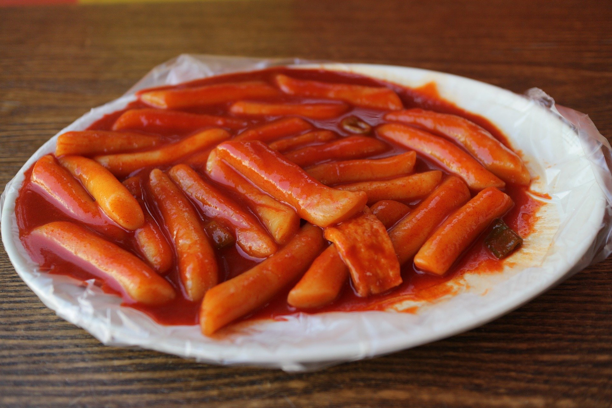

떡볶이 만드는법
1.준비물
2.양념만드는법
3.만드는법
만드는법
1 대파는 어스 썰거나 반으로 갈라 길게 썰어 준비한다
2 양배추, 어묵은 먹기 좋은 크기로 썰어 준비한다
3 냄비에 물, 진간장, 황설탕 , 고추장, 고춧가루, 대파 ,양배추를 넣어 끓인다
4 떡볶이떡은 흐르는 물에 가볍게 세척한다
5 육수가 끓으면 삶은달걀, 떡을 넣고 함께 끓여준다
7 떡을 넣고 육수가 끓어오르면 어묵을 넣어준다
8 양념장이 걸쭉하게 졸아들 때까지 끓여 완성한다

완성~~~